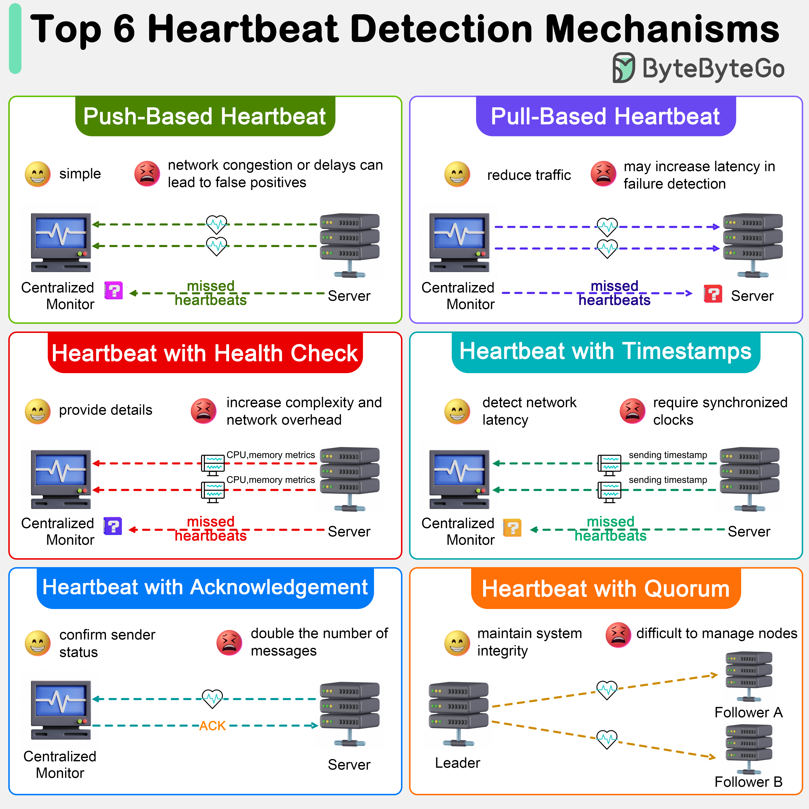

Heartbeat mechanisms are crucial in distributed systems for monitoring the health and status of various components. Here are several types of heartbeat detection mechanisms commonly used in distributed systems:
The most basic form of heartbeat involves a periodic signal sent from one node to another or to a monitoring service. If the heartbeat signals stop arriving within a specified interval, the system assumes that the node has failed. This is simple to implement, but network congestion can lead to false positives.
Instead of nodes sending heartbeats actively, a central monitor might periodically “pull” status information from nodes. It reduces network traffic but might increase latency in failure detection.
This includes diagnostic information about the node’s health in the heartbeat signal. This information can include CPU usage, memory usage, or application-specific metrics. It Provides more detailed information about the node, allowing for more nuanced decision-making. However, it increases complexity and potential for larger network overhead.
Heartbeats that include timestamps can help the receiving node or service determine not just if a node is alive, but also if there are network delays affecting communication.
The receiver of the heartbeat message must send back an acknowledgment in this model. This ensures that not only is the sender alive, but the network path between the sender and receiver is also functional.
In some distributed systems, especially those involving consensus protocols like Paxos or Raft, the concept of a quorum (a majority of nodes) is used. Heartbeats might be used to establish or maintain a quorum, ensuring that a sufficient number of nodes are operational for the system to make decisions. This brings complexity in implementation and managing quorum changes as nodes join or leave the system.